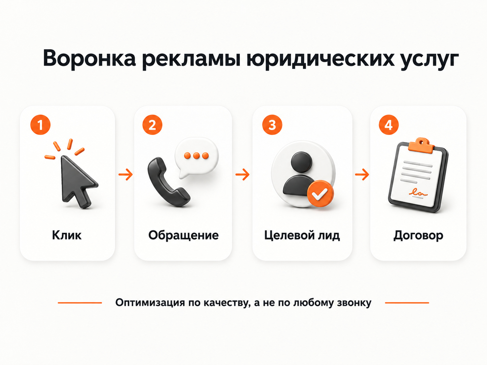
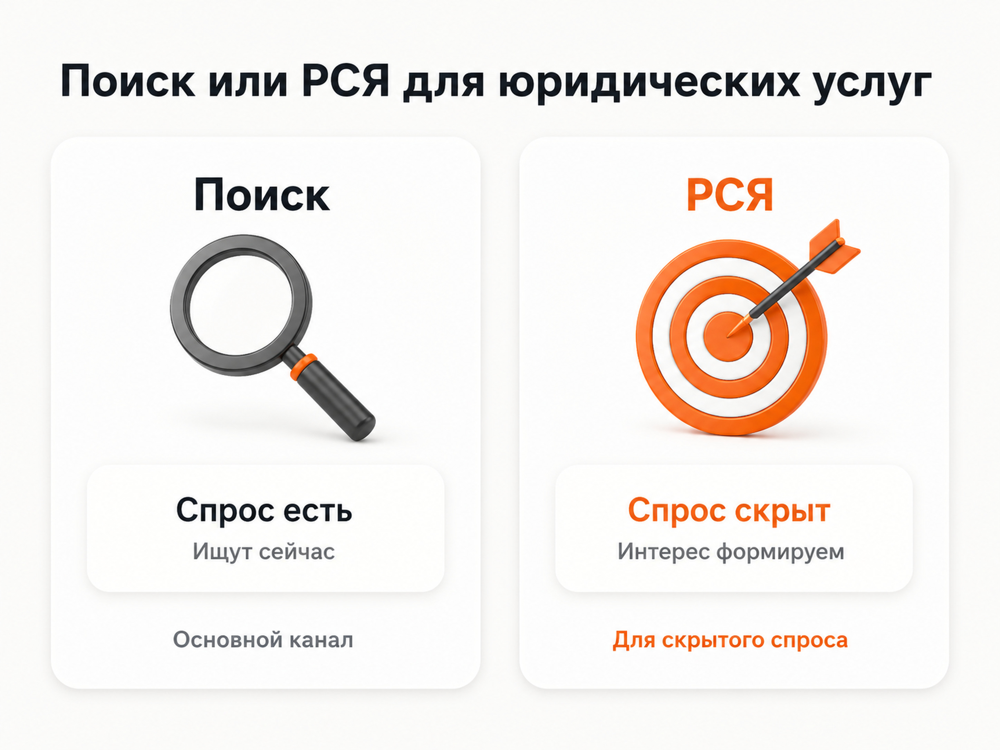

Блог о платном трафике
Яндекс Директ для юридических услуг: как получать целевые обращения
Яндекс Директ хорошо подходит для юридических услуг, когда человек уже столкнулся с конкретной проблемой и ищет специалиста: адвоката, юриста, юридическую компанию или помощь по определенному вопросу. На Поиске реклама появляется непосредственно в момент такого запроса, поэтому здесь можно работать с уже сформированным спросом.
Но юридическая тематика неоднородна. Реклама адвоката, который работает с физическими лицами по разным направлениям права, и продвижение сложного юридического консалтинга для бизнеса требуют разного подхода. Отличаются поисковый спрос, цикл принятия решения, цена обращения и даже рекламные инструменты.
В своих проектах я поэтому начинаю не с универсальной кампании «юридические услуги», а с разборки отдельных направлений и того, как именно клиент ищет помощь.
В чем специфика рекламы юридических услуг
Главная особенность ниши - пользователь обычно ищет не абстрактного юриста, а решение конкретной проблемы.
Формулировки запросов могут строиться вокруг:
- определенного направления права;
- конкретной ситуации;
- документа или процедуры;
- суда или спора;
- консультации;
- срочной помощи;
- поиска адвоката или юридической компании;
- географической привязки.
Поэтому запросы с разным намерением желательно разделять.
Человек, который уже ищет адвоката для решения конкретного вопроса, находится значительно ближе к обращению, чем пользователь, который просто читает информацию по теме. Если смешать эти аудитории, рекламный бюджет быстро начинает уходить на информационный спрос.
Отдельная проблема - бесплатные консультации. Запрос может выглядеть тематическим, но пользователь изначально не собирается платить. Поэтому качество поискового трафика приходится оценивать уже после запуска, по фактическим запросам и звонкам.
Отдельные направления права лучше разделять
Если адвокат или юридическая компания работают сразу по нескольким направлениям, я не считаю правильным сваливать их в одну рекламную группу.
Например, условно могут отдельно продвигаться:
- семейные споры;
- наследственные вопросы;
- жилищные дела;
- арбитраж;
- уголовные дела;
- защита бизнеса;
- юридический консалтинг.
Это примеры структуры, а не обязательный список.
Разделение позволяет для каждого направления использовать свои запросы, объявления, посадочные страницы, ограничения бюджета и допустимую стоимость обращения.
Если одно направление приносит клиента по приемлемой цене, а другое расходует половину бюджета почти без результата, это должно быть видно в статистике.
Подробнее общий принцип структуры кампаний я разбирал в статье «Настройка Яндекс Директ: что входит и как правильно запустить рекламу».
Поиск обычно становится основой рекламы юриста
Для большинства услуг с выраженным спросом я в первую очередь проверяю Поиск.
Логика простая: человек уже сформулировал проблему и самостоятельно ищет специалиста. Это значительно сильнее по намерению, чем попытка заранее показать рекламу пользователю, который пока юридической помощью не интересуется.
Хороший пример есть в моем кейсе по юридическому консалтингу.
Проект работает с обязательными публикациями, Федресурсом, Роскомнадзором, ФРМО, категорированием объектов КИИ и другими профильными услугами. В этом проекте около 99% лидов приходит с Поиска. Баннерная реклама практически не дает результата, потому что потребность возникает только в момент появления конкретной задачи.
При этом цена обращения внутри одной юридической ниши различается очень сильно. Простые лид-магниты в этом проекте могут давать заявки примерно по 150-300 рублей, а сложные и узкие услуги обходятся в несколько тысяч рублей за обращение.
Это хороший пример того, почему фраза «сколько стоит лид для юриста» сама по себе почти ничего не говорит.
Нужно знать, какую именно услугу рекламируют.
Реальный пример рекламы обычного адвоката
Отдельно приведу свежую статистику по проекту адвоката, который работает сразу с разными видами дел.
Это не узкий юридический продукт и не лид-магнит. Реклама привлекает людей, которым требуется реальная помощь адвоката.
На первом срезе статистика выглядела так:
| Показатель | Первый период | Следующий период |
|---|---|---|
| Расход с НДС | 22 495,12 ₽ | 18 345,91 ₽ |
| Показы | 192 000 | 115 396 |
| Клики | 919 | 1 046 |
| Средний CPC | 20,06 ₽ | 14,38 ₽ |
| Звонки с сайта | 10 | 18 |
| Конверсия | 1,09% | 1,72% |
| CPA в интерфейсе Директа | 1 843,86 ₽ | 835,42 ₽ |
То есть в следующем периоде количество зафиксированных звонков выросло с 10 до 18, а CPA в интерфейсе снизился примерно на 55%.
При этом рекламный расход даже уменьшился.
Но для юридической рекламы важнее следующий уровень аналитики.
После проверки качества обращений из 18 звонков 11 были определены как целевые. По данным клиента стоимость квалифицированного лида получилась примерно 1600 рублей. На первой неделе она была около 1700 рублей.
Именно эту цифру я считаю полезнее обычного CPA из рекламного кабинета.
18 звонков еще не означают 18 потенциальных клиентов. Среди обращений могут быть неподходящие дела, бесплатные консультации, звонки не из нужного региона или ситуации, которые адвокат в принципе не берет.
Поэтому оптимизировать рекламу юридических услуг только по количеству звонков нельзя.

Считать нужно квалифицированные обращения
Для нормальной аналитики я разделяю несколько уровней:
Клик -> обращение -> целевое обращение -> квалифицированный лид -> клиент.
Яндекс Директ видит первые уровни значительно лучше, чем последние.
Если алгоритму сообщать только о любом звонке, он будет искать пользователей, склонных звонить. Но рекламодателю нужны люди, которым действительно можно оказать услугу.
Поэтому желательно фиксировать хотя бы:
- звонки;
- заявки через формы;
- обращения через мессенджеры;
- целевые и нецелевые обращения;
- направление права;
- квалификацию лида;
- заключенные договоры.
Особенно это важно в дорогих юридических направлениях. Разница между стоимостью заявки 1000 и 1500 рублей мало что значит, если первая кампания приводит почти одни бесплатные консультации, а вторая дает реальные договоры.

Почему нельзя оценивать рекламу по цене клика
В юридической тематике цена клика часто привлекает слишком много внимания.
Сам по себе дешевый CPC ничего не гарантирует.
В приведенном выше проекте средняя цена клика снизилась с 20,06 до 14,38 рубля. Это хороший дополнительный показатель, но главное изменение произошло дальше по воронке: выросло количество звонков и снизилась стоимость обращения.
Поэтому я смотрю на CPC как на диагностическую метрику.
Основные вопросы другие:
- сколько получили обращений;
- сколько из них целевых;
- сколько прошло квалификацию;
- сколько заключено договоров;
- сколько стоит клиент.
География может незаметно расходовать бюджет
Для юриста географию нужно проверять особенно внимательно.
Если адвокат работает только в определенных регионах или физически не берет дела из другого города, реклама там не имеет смысла независимо от стоимости клика.
Перед запуском я определяю:
- где реально оказывается услуга;
- требуется ли личное присутствие;
- возможна ли дистанционная работа;
- какие регионы имеют отдельную экономику;
- нужно ли разделять города по кампаниям.
После запуска дополнительно анализируется фактическая статистика по регионам.
Один лишний регион может выглядеть нормально по кликам, но давать обращения, которые затем постоянно отклоняются.
Каким должен быть сайт для рекламы юридических услуг
У пользователя после перехода на сайт возникает простой вопрос: можно ли доверить этому специалисту свою проблему?
Поэтому посадочная страница должна быстро объяснять:
- Какими делами занимается специалист.
- С какой конкретно ситуацией он может помочь.
- Как проходит работа.
- Как связаться.
- Кто оказывает услугу.
Если направлений много, полезнее вести рекламу на соответствующий раздел или отдельную посадочную страницу, чем отправлять всех на общую главную.
Например, человек ищет решение конкретного спора. После клика он должен увидеть информацию именно об этом направлении, а не самостоятельно искать нужный пункт среди двадцати услуг.
Общие принципы посадочных страниц я отдельно разобрал в статье «Что такое лендинг в Яндекс Директе».
Какие объявления работают лучше
Задача объявления - быстро показать человеку, что он попал по адресу.
Я стараюсь связывать три элемента:
Запрос -> объявление -> страница сайта.
Если пользователь ищет конкретную юридическую услугу, она должна быть понятна уже из заголовка.
Не нужно пытаться вместить в одно объявление весь перечень услуг компании.
Фразы вроде «юридические услуги любой сложности» слишком общие и почти ничего не сообщают человеку о том, решают ли здесь именно его проблему.
Лучше разделять объявления по реальным направлениям и проверять разные аргументы:
- специализацию;
- формат консультации;
- географию;
- опыт в определенной категории дел;
- порядок работы;
- возможность быстро связаться со специалистом.
Утверждения в объявлениях при этом должны соответствовать фактам и требованиям модерации.
Автоматические стратегии работают только на нормальных данных
В современных кампаниях значительную часть управления ставками берет на себя алгоритм Яндекса.
Если конверсий достаточно, логично оптимизировать рекламу непосредственно под звонки и заявки.
Но здесь снова появляется проблема качества целей.
Если в качестве основной конверсии передать слишком простое действие, алгоритм может успешно находить именно его, не улучшая бизнес-результат.
Поэтому для юридических услуг я предпочитаю максимально приближать оптимизацию к реальному обращению.
При небольшом количестве конверсий слишком сильное дробление кампаний тоже мешает. Статистика распределяется между большим количеством сегментов, и каждому из них достается слишком мало данных.
Подробнее выбор между конверсиями, кликами и ручным управлением я разобрал в статье «Какую стратегию выбрать в Яндекс Директ».
Когда РСЯ может работать лучше Поиска
Поиск не является универсальным ответом для всей юридической и смежной B2B-тематики.
Есть услуги, которые клиент практически не ищет напрямую.
В таком случае объема прямых запросов может просто не хватить.
Похожая ситуация была в моем кейсе по выкупу акций. Это смежная сложная B2B-услуга с контрактами на несколько миллионов рублей и почти отсутствующим прямым поисковым спросом.
Там основной результат дала другая связка - РСЯ и Мастер кампаний. Реальная стоимость обращения с учетом всех точек контакта составляла около 2500 рублей.
Получается два противоположных сценария.
В юридическом консалтинге с конкретным сформированным спросом около 99% заявок может приходить с Поиска. В услуге со скрытым спросом основной объем способен дать РСЯ.
Поэтому я выбираю канал по поведению аудитории, а не по правилу «юристам всегда нужен только Поиск».

Что регулярно проверять после запуска
Работа с Яндекс Директом начинается после появления статистики.
В юридическом проекте я регулярно смотрю:
- фактические поисковые запросы;
- нецелевые формулировки;
- географию;
- расход по направлениям;
- стоимость звонка;
- стоимость квалифицированного лида;
- конверсию сайта;
- качество звонков;
- эффективность отдельных кампаний;
- распределение бюджета.
Особенно полезна обратная связь от человека, который принимает звонки.
Рекламный кабинет может показывать красивый CPA, но специалист на телефоне через неделю скажет, что половина звонящих спрашивает бесплатную консультацию. Для оптимизации эта информация ценнее, чем дополнительная таблица с CTR.
Основные ошибки в Яндекс Директе для юридических услуг
Чаще всего проблемы возникают из-за нескольких причин.
Все услуги собраны в одну кампанию. Невозможно нормально контролировать бюджет и понимать экономику отдельных направлений.
Реклама ведет на общую страницу. Человек не видит продолжения своего запроса после клика.
Не отслеживаются звонки. Для адвокатов телефон часто является одним из основных способов обращения.
Любой звонок считается хорошим лидом. В итоге реклама оптимизируется на количество, а не на качество.
Слишком широкая география. Деньги расходуются на клиентов, которых специалист не сможет обслужить.
Оценивается только CPC. Дешевые переходы могут давать дорогих или нецелевых клиентов.
Не анализируются реальные поисковые запросы. В кампании постепенно накапливается информационный и смежный трафик.
Кампанию постоянно перестраивают. Алгоритм не успевает накопить данные, а специалист не может нормально сравнить периоды.
Сколько стоит реклама юридических услуг в Яндекс Директе
Универсальной стоимости лида для юридической тематики нет.
Даже внутри моих проектов разброс очень большой.
В юридическом консалтинге простые лид-магниты могут давать обращения примерно по 150-300 рублей, а сложные услуги - по несколько тысяч рублей. В приведенном выше проекте обычного адвоката стоимость квалифицированного лида находилась примерно на уровне 1600 рублей.
Сравнивать эти цифры напрямую неправильно.
В первом случае пользователь может получить информационный материал или оставить простой контакт. Во втором речь идет о человеке, который уже обратился к адвокату со своей проблемой и прошел первичную квалификацию.
Поэтому при планировании рекламы я отталкиваюсь от экономики конкретной услуги:
допустимая стоимость клиента -> конверсия из лида в договор -> допустимая стоимость квалифицированного лида -> необходимый рекламный бюджет.
Только после этого можно оценивать, дорогой получился лид или дешевый.
Подойдет ли Яндекс Директ вашей юридической практике
Директ имеет смысл тестировать, если люди действительно ищут ваши услуги или можно определить аудиторию со скрытым спросом.
Для адвоката с востребованными направлениями первым источником обычно становится Поиск. Для специализированного B2B-консалтинга решение зависит от характера спроса. В одном проекте почти все обращения способен давать Поиск, в другом потребуется РСЯ или автоматические кампании.
Главное - заранее настроить аналитику и после запуска считать не клики и даже не все заявки, а качественные обращения и договоры.
На моем сайте можно посмотреть кейс юридического консалтинга и другие проекты по Яндекс Директу.
FAQ
Работает ли Яндекс Директ для адвокатов?
Да, особенно если потенциальные клиенты сами ищут помощь по конкретной юридической проблеме. В этом случае реклама на Поиске позволяет работать с уже сформированным спросом.
Нужно ли делать отдельную кампанию на каждое направление права?
Не обязательно создавать отдельную кампанию буквально под каждую услугу. Но направления с разными запросами, посадочными страницами, бюджетами или экономикой желательно разделять так, чтобы ими можно было независимо управлять.
Что лучше для юридических услуг - Поиск или РСЯ?
Для услуг с выраженным прямым спросом я обычно начинаю с Поиска. Для сложных B2B-направлений со скрытым спросом может эффективнее работать РСЯ. Решение принимается по статистике конкретного проекта.
Какой показатель главный в рекламе юридических услуг?
Для первичной оценки - стоимость обращения. Для бизнеса значительно полезнее стоимость квалифицированного лида и клиента. Именно они показывают реальную экономику рекламы.